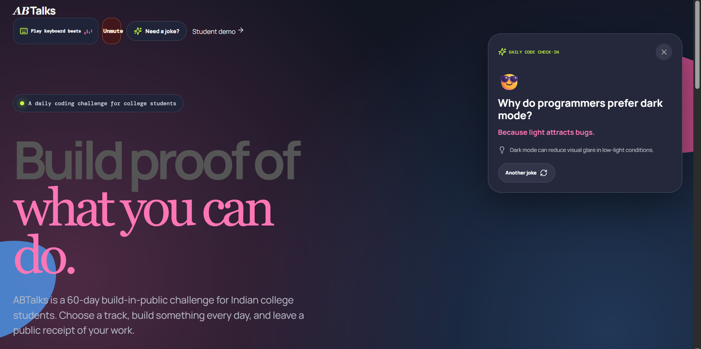
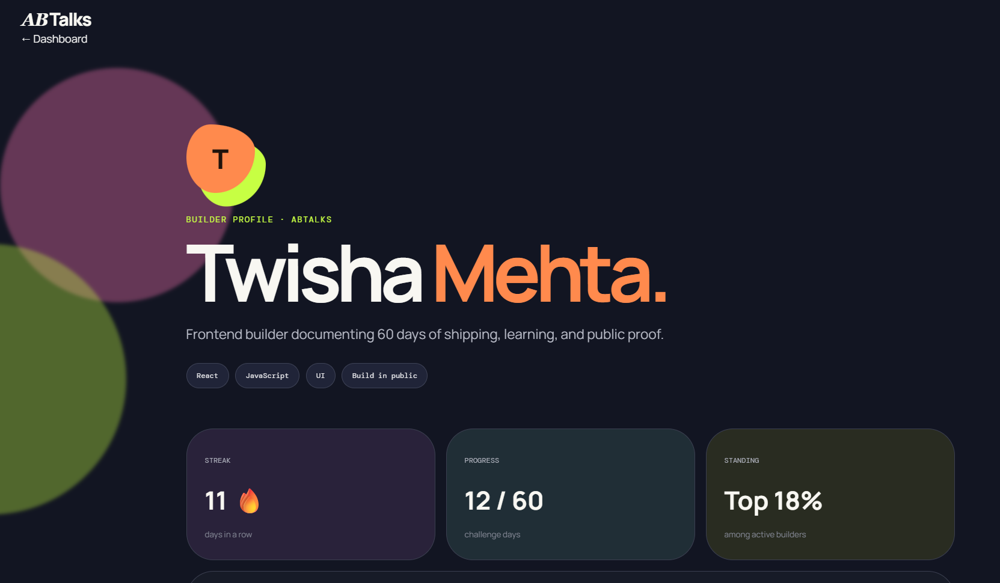
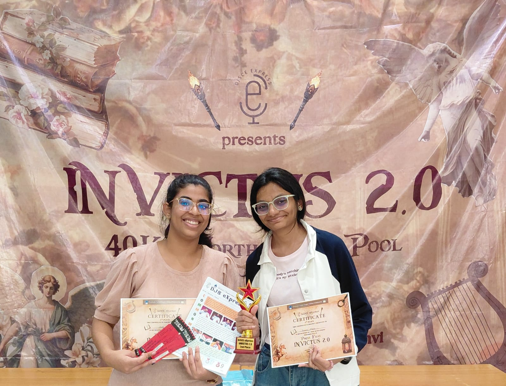

Hey there, I'm Twisha.
I'm an engineer. I like taking things apart to understand how they fit back together, this page included.
Keep scrolling ↓🌊 Engineering student · Puzzle fanatic
I'm an engineering student who loves AI, coding, and designing, and solving problems that make me think differently.
Right now, I'm exploring UI/UX and web development, learning how to turn ideas into webpages that aren't just functional, but actually feel good to use. I love experimenting with different ideas, designs, and technologies. If there's something new to try, I'm probably going to try it.
I'm also the kind of person who enjoys a challenge. My friends would describe me as empathetic, fearless, and a challenge taker. When something gets difficult, my first thought is usually, "Okay, how do I solve this?" I like figuring things out, researching, trying again, and not giving up until I understand what went wrong.
When I'm away from my screen, you'll probably find me with a puzzle or a book. I'm a huge puzzle fanatic, I love the feeling of connecting little pieces until everything finally clicks. Reading is another thing I genuinely love, and getting lost in a good book is one of my favourite ways to spend time.
I'm still exploring where technology will take me, but for now, I'm enjoying the journey of learning, designing, experimenting, solving, and building things along the way.
"Life is a conundrum of esoterica."
🧭 From robotics kits to hackathons
Before engineering, I was a fairly studious kid who loved having something new to learn. I was Head Girl at school, enjoyed writing, and spent a lot of my free time reading. I was also drawn to robotics from an early age, which became one of my first experiences with building things.
I started learning robotics around 6th or 7th grade and spent the next few years building different projects. I made a basketball counter that counted successful shots, experimented with line following robots, and built a small ATM style door that could be unlocked by entering the correct code.
Those projects introduced me to something that has stayed with me ever since: the satisfaction of turning an idea into something that actually works.
That curiosity eventually led me to Computer Engineering and cybersecurity at DJSCE. College has given me the opportunity to explore programming, web development, competitions, hackathons, and projects that constantly push me beyond what I already know.
Everything I build pushes me outside my comfort zone. Maybe that's why I love it. There is always something new to figure out, something that doesn't work the first time, or a skill I haven't learned yet.
Technology is only one part of what interests me. I've always loved writing and reading, and I'm almost never too far away from a book. I also enjoy experiences that let me work with people, take on unfamiliar challenges, and explore interests outside my usual space.
Two years from now, I hope this section feels a little outdated. I want to keep learning, build things that genuinely excite me, explore areas I haven't discovered yet, and become a more confident version of myself along the way.
I'm not trying to have everything figured out. I'm trying to keep growing into someone I haven't been before.
"The world is full of obvious things which nobody by any chance ever observes."


4 hours. One idea. One working website.
⚡ Hackathon Build · 4 Hours
What started as a fast-paced hackathon challenge turned into a fully functional web application built in just 4 hours with the help of AI. I took the concept from a blank page to a live, deployed site, making real-time design decisions, troubleshooting, and refining as I went.
The goal was to create a student-centric builder profile for AB Talks that tracks consistency and daily momentum. The resulting platform highlights active streak counts and total days worked, turning daily discipline into a visual showcase of progress.
I really enjoyed the speed of the challenge. With no time to overthink, it was all about rapid execution: building, testing, changing, and keeping the momentum going from start to finish.
⚡ 4-hour build
View the live project →For thoughts that shouldn't disappear.
📝 Personal Project · Note Taking App
A simple note taking web app I built to make saving quick thoughts easy. It lets you add, edit, and delete notes, with everything stored locally so your notes stay even after you leave the page.
This was one of my projects where I got to play around with HTML, CSS, JavaScript, and interface design, while keeping the experience simple and useful.
📝 simple idea, useful little app
View live project →My first little experiment with Python.
🎮 First Experiment · Python
Pong was one of those projects that felt like the perfect place to start experimenting. It's a simple game, but building it myself meant figuring out movement, collision detection, controls, and scoring, and watching the pieces come together.
It was an easy first project, but it made programming feel a lot more interactive. Sometimes you just need to build something small to get started.
🎮 first experiment, many more to come
View on GitHub →
🥈 2nd Place · Press Files · Team of 2
A fellow teammate and I participated in Press Files, a journalism and investigation challenge focused on observation, problem solving, and deduction. We entered with limited knowledge of what to expect, knowing only that the competition would involve uncovering and connecting clues.
The challenge required us to work through puzzles, riddles, and emoji based clues under time pressure. With only the top 12 teams progressing, we initially did not expect to advance, making it a particularly rewarding moment when we qualified for the next stage.
Throughout the competition, we relied on collaborative problem solving, careful observation, and constant discussion to work through the clues. We ultimately secured 2nd Place and received a prize of ₹2,500.
It was a valuable experience in working under pressure, approaching unfamiliar problems, and combining different perspectives to arrive at a solution. I was especially glad to share the experience with my teammate, who made the competition even more memorable.
🥈 With a fellow teammate — investigation, problem solving, and teamwork.